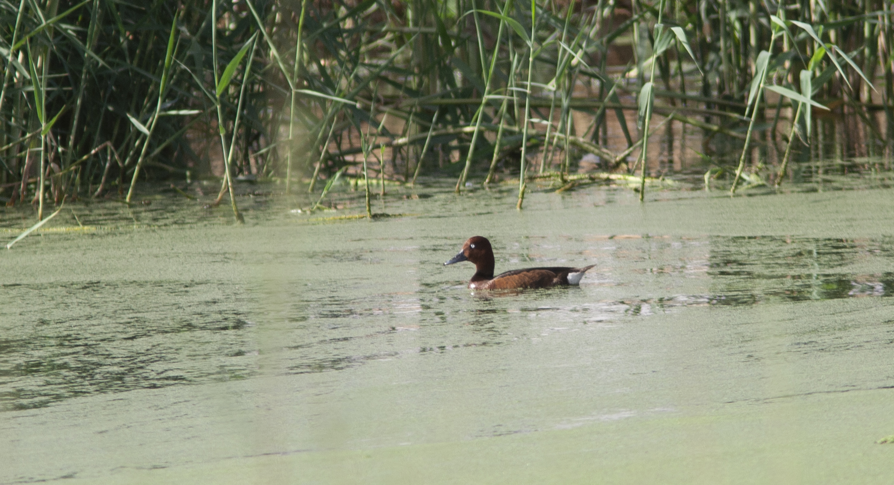

Aythya nyroca — Un canard châtain quasi menacé entre zones de reproduction arabes et lacs d’hiver
Identité et reconnaissance
Le Fuligule nyroca, Aythya nyroca, est un canard plongeur de la famille des Anatidés. Le mâle présente un plumage châtain soutenu, un dos plus sombre et un iris très pâle, presque blanc. Sa calotte paraît légèrement pointue et son bec est gris foncé. Les sous-caudales blanches et la large bande alaire blanche visible en vol constituent des critères importants. Long d’environ 38–42 cm, il est plus petit et moins massif que certains canards plongeurs qui l’accompagnent.
Âge, sexe et espèces proches
La femelle conserve le même dessin général, mais elle est plus terne et ses yeux sont bruns. Le jeune lui ressemble, avec un brun moins vif et un blanc moins pur au ventre et sous la queue. Un œil sombre n’exclut donc pas l’espèce. Le mâle du Fuligule milouin possède un corps gris et une poitrine noire; le morillon porte une huppe marquée. Femelles de canards plongeurs et hybrides peuvent compliquer l’identification: forme de la tête et du bec, iris, sous-caudales et ailes doivent être examinés ensemble.
Milieux, alimentation et comportement
Il préfère les eaux douces peu profondes, riches en plantes immergées et flottantes, bordées de roseaux ou d’un couvert dense. Certaines mares saumâtres sont également utilisées. Il se nourrit en plongeant et près de la surface, consommant graines, racines et autres éléments végétaux aquatiques ainsi que des invertébrés. Sa discrétion près des plantes peut le rendre difficile à repérer même sur un grand lac. Hors reproduction, il rejoint parfois d’autres plongeurs. Les trouées d’eau libre entre les plantes permettent de nager, se nourrir et se reposer: leur association avec le couvert est essentielle.
Reproduction et cycle de vie
Le nid se trouve près de l’eau dans une végétation dense, sur une plateforme végétale ou un îlot flottant. Les références biologiques indiquent habituellement 7–10 œufs, environ 25–28 jours d’incubation et l’envol vers 55–60 jours. Une étude publiée en 2021 a suivi cinquante nids au lac Tonga, en Algérie, pendant 2016 et 2017. Elle relie la réussite aux caractéristiques des sites et à la densité des nids. Certaines femelles déposaient leurs œufs dans d’autres nids de la même espèce, contribuant aux nombres d’œufs exceptionnels. Ce lac est donc aussi un lieu de reproduction.
Répartition et saisonnalité arabes
Dans le monde arabe, ses rôles saisonniers diffèrent. Il niche dans des zones humides algériennes, dont Tonga; BirdLife souligne l’importance du lac Nasser, en Égypte, pour l’hivernage. La liste libanaise de 2020 décrit de rares migrateurs et hivernants entre septembre et mars, et quelques estivants non nicheurs. En Irak, une étude publiée en 2011 documente nids et familles dans les marais de Dalmaj en mai 2010. L’automne relie ainsi des populations reproductrices régionales à des arrivants plus lointains; une observation estivale ne prouve pas toujours la nidification.
Écologie et conservation
Son statut mondial est «Quasi menacé», confirmé par BirdLife dans une publication d’août 2026. Disparition des zones humides, dégradation de la végétation, perturbation des niveaux d’eau, sécheresse et chasse excessive constituent des pressions. Sa survie dépend d’un réseau de sites de reproduction, halte et hivernage, plutôt que d’un lac isolé. Des régimes hydrologiques adaptés, une végétation variée et des espaces tranquilles favorisent alimentation et nidification. L’observation à distance évite de provoquer des envols répétés pour une photographie, particulièrement dans les petites zones humides.
Références
BirdLife International — Across continents: The journey of the Ferruginous Duck (26 August 2026)
BirdLife Cyprus — Ferruginous Duck
CMS / AEWA — International Single Species Action Plan for the Ferruginous Duck (2006)
Global Ecology and Conservation — Nest site selection and breeding ecology of the Ferruginous Duck in Algeria (2021)
Ramadan-Jaradi and colleagues — Updated checklist of the birds of Lebanon, Sandgrouse 42 (2020)
Ararat and colleagues — breeding records in Iraq, Sandgrouse 33 (2011)
Mediterranean Waterbirds Network — Ferruginous Duck identification
Libyan Birds — Aythya nyroca
Photo : Tero Linjama (terolinjama) — CC0-1.0.